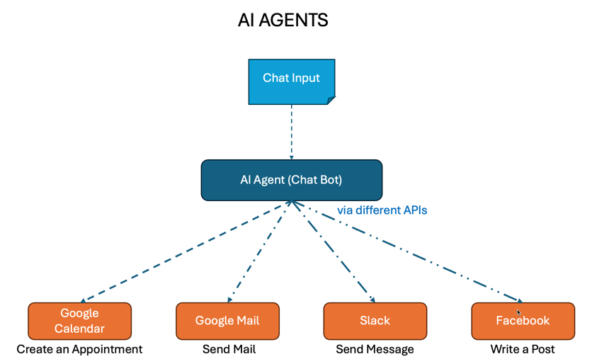

I have been hearing a lot about MCP (Model Context Protocol) in my feeds. So what is MCP and why is it the next big thing in AI? I set out to find out more and in the process ended up building a suite of MCP servers to help me in travel planning.
But before I jump in with the project, let us understand what MCP is (if you would rather want to hear about the project first, head on to the section: Real-World Project: The Intelligent Travel Assistant).
Apparently, the AI revolution was hitting a wall — but not the one you might expect. While LLMs have achieved breathtaking capabilities in reasoning and generation, they remain frustratingly isolated in data silos, unable to seamlessly interact with the rich ecosystem of tools and information sources that could unleash their true potential. Every new integration requires custom logic, different authentication schemes, and brittle connections that break when you need them most.
Imagine trying to build an intelligent travel assistant today. You want users to simply ask: "Find flights, hotels and things to do for a family of two in Banff, Alberta in June considering weather conditions. My budget is $5000 USD" and receive comprehensive, coordinated results. But to make this happen, you must manually integrate six different APIs—each with unique authentication, different data formats, inconsistent error handling, and separate rate limiting schemes. One API change breaks your entire system. Adding a new travel service requires weeks of custom integration work even with powerful agent orchestration frameworks like LangGraph.

But what if there was a way to solve this integration nightmare once and for all? What if LLMs could discover and orchestrate multiple services as easily as plugging devices into a USB-C port?
Enter the Model Context Protocol (MCP)—an open standard that has the potential to transform how AI agents interact with the world. Using MCP allows AI agents to interact with external tools and data sources by discovering, understanding, and using various capabilities provided by external systems. You no longer have to wire the orchestration.
MCP servers implement MCP protocol by providing tools, resources, and contextual information that AI assistants can use via MCP clients. Think of MCP servers as wrappers around service providers such as Google Drive for storing documents, Google Calendar for setting up appointments, Stripe for making payments etc.
Multiple MCP Servers can be attached to a single MCP Client running on MCP Hosts such as Claude Desktop, Cursor IDE etc. This beats having to connect each service provider separately to your agent through their APIs and deal with the idiosyncrasies of each API provider.
As a result, MCP lets AI models break free from their training data prison and interact with everything around them in real-time!
Here's what makes this absolutely mind-blowing: Instead of AI being limited to generating pretty text, MCP creates a standardized bridge that connects AI to travel APIs, databases, your local files, enterprise tools - you name it! It's like giving AI superpowers to actually do things, not just talk about them.
Now, picture this incredible future: Your AI travel assistant doesn't just suggest a trip - it dynamically discovers the best travel services, orchestrates complex multi-step bookings, and adapts to new platforms seamlessly. And here's the kicker - once you give the thumbs up, it actually goes ahead and books your flights, reserves your hotels, and secures those restaurant reservations!
This isn't science fiction. This is AI finally graduating from impressive party trick to your most capable digital teammate and it's happening right now!
The current state of AI integration is a developer's nightmare. Building that intelligent travel assistant requires juggling five different authentication schemes, handling inconsistent data formats from Skyscanner, Booking.com, Viator, OpenWeatherMap, and currency APIs. When Skyscanner updates their response format, your integration breaks. Rate limits are handled differently across services. Error messages are cryptic and unhelpful. Adding a new hotel API requires weeks of custom integration work.
MCP solves these problems by introducing three game-changing innovations:
Context-Aware Tool Discovery: Unlike traditional APIs that require hardcoded integrations, MCP enables AI agents to dynamically discover available services. Your travel assistant powered by a LLM can find flight search tools, hotel booking capabilities, and activity recommendations at runtime (yes, at runtime), adapting to new services without code changes.
Built-in Safety and Governance: With AI agents making autonomous decisions across multiple services, security isn't optional. MCP includes sophisticated permission models, audit logging, and risk-based execution controls that align with enterprise security requirements—crucial when your travel assistant is handling payment information across different platforms.
LLM-Native Design: Every aspect of MCP is optimized for AI agents. From self-documenting tool capabilities to semantic resource descriptions, the protocol speaks the language of modern LLMs, enabling your travel assistant to understand not just what services are available, but when and how to use them effectively.
MCP isn't trying to replace APIs. Rather, it is creating a new layer of abstraction that makes APIs infinitely more powerful for AI applications.
Traditional APIs excel at direct, high-performance system-to-system communication. The Skyscanner API is optimized for flight searches, Booking.com's API handles hotel reservations efficiently, and weather APIs deliver meteorological data quickly. They offer fine-grained control and benefit from decades of established patterns.
But when an LLM tries to orchestrate these APIs for a travel request, everything becomes complicated. How does the AI know without you the developer specifying that Skyscanner is better for flights while Viator excels at activities? What authentication is required for each service? How should the agent handle rate limits across multiple providers? What happens when Booking.com's API returns an error while other services succeed?
MCP addresses these challenges by providing:
The relationship is beautifully complementary. MCP servers often wrap existing travel APIs, providing an AI-friendly interface while preserving the performance and specificity of services like Skyscanner's flight search algorithms or Booking.com's inventory management.
MCP's elegance lies in its layered architecture, built on three foundational layers that work in perfect harmony:
The Transport Layer abstracts away communication mechanisms. Whether you're using HTTP/HTTPS for web-based integrations, stdio for local processes, or custom transports for specialized environments, the upper layers remain unchanged.
The Protocol Layer defines the message formats and communication patterns - for instance, JSON/RPC.
The Capability Layer is where the magic happens. This layer defines three powerful primitives that transform how AI agents interact with external systems.
But what are these primitives that make MCP so revolutionary? Let's dive into the core building blocks that are reshaping AI integration.
MCP's power comes from three carefully designed primitives, each addressing a specific aspect of AI-system interaction:
Resources represent any data that an MCP server wants to make available—file contents, database schemas, API responses, even live screenshots. Each resource has a unique URI and can contain text or binary data. The key here is dynamic URIs that let AI agents construct valid resource paths programmatically. Imagine an AI that can explore a file system or database schema just by understanding the URI patterns.
Tools enable LLMs to take action in the real world. Unlike static API calls, MCP tools are self-describing, with rich schemas that help AI agents understand parameters, constraints, and expected outcomes. In our travel assistant example, a flight search tool doesn't just accept destination parameters—it understands seasonal preferences, budget constraints, and can even suggest alternative airports. The model-controlled design means the AI can decide when to search for flights versus when to check weather conditions first.
Prompts create reusable templates that guide AI behavior for specific travel scenarios. A "plan weekend getaway" prompt might include context about balancing activity types, considering weather patterns, and optimizing for budget constraints. Server authors can expose prompt libraries that turn expert travel planning knowledge into shareable, discoverable assets.
Here is an anatomy of a sample MCP server that utilizies these three prompts:

But here's where MCP truly shines: these primitives work together seamlessly, creating emergent capabilities that are greater than the sum of their parts.
Enough theory. Nothing illustrates MCP's transformative power better than building an intelligent travel assistant. Imagine asking a simple question: "Find flights, hotels and things to do for a family of two in Banff, Alberta in June considering weather conditions. My budget is $5000 USD" and watching as your AI agent seamlessly orchestrates multiple services to deliver a comprehensive travel plan.
This scenario should perfectly showcase the dramatic difference between traditional API integration nightmares and MCP's elegant orchestration capabilities. Or will it?
I wanted to find out the hard way. So I first took the course on MCP from the trusted source for learning AI: Andrew Ng's DeepLearning Institute. They have a fantastic course on MCP. Check it out. Having built a Research Server using the course, I turned to building my own travel assistant suite.
My Travel Assistant MCP Ecosystem consists of six specialized servers that work in harmony:
For Flight Search, Hotel Search, Event Search and Finance Search, I used Google's services using SERPAPI. For Geocoder, I used the free Nominatim service. For Weather Forecasts, I used National Weather Service API. All of these APIs were wrapped by my MCP servers.
My User Request : "I am planning a trip to Banff and Jasper in Alberta from Reston, Virginia during June 7th 2025 to June 14th 2025. Find flights, hotels and events that are happening in Banff, Alberta and things to do for me and my wife during the time based on weather conditions. We like to hike, go sight-seeing, dining, and going to museums. My budget is $5000 USD. Make sure to convert cost from Canadian dollars to USD before presenting."
Here's how Claude orchestrates the MCP servers to fulfill this complex request:

Claude synthesizes all data to create:
Are you ready to see the comprehensive travel plan that Claude generated using my MCP servers?
As you can see, the travel plan is comprehensive with options for different budgets, transportation recommendations, packing for the weather etc.
Plan a weekend trip from San Francisco to Portland, Oregon for next weekend.
We want to visit breweries, food trucks, and outdoor markets. Budget is $1500
for 2 people. Find flights leaving Friday evening and returning Sunday night.
I need to travel from New York to Tokyo for a conference June 20-25, 2025.
Find business class flights, luxury hotels near Tokyo Station, check weather
for appropriate clothing, and convert all costs to USD. Also find networking
events for tech professionals during that week.
Plan a family vacation to Orlando, Florida for July 15-22, 2025 for 2 adults
and 2 children (ages 8 and 12). We want to visit theme parks, but also need
backup indoor activities in case of rain. Budget is $8000 USD total.
Plan a 2-week European tour visiting London, Paris, Rome, and Barcelona
from August 5-19, 2025. Find the most efficient flight routing, centrally
located hotels, cultural events and museums, check weather patterns,
and provide a day-by-day itinerary with budget breakdown.
We're witnessing the emergence of a new paradigm in AI integration. The research community is actively addressing security challenges, with frameworks like MCIP providing enhanced safety mechanisms and MCP Guardian offering comprehensive security layers. The developer ecosystem is exploding with new servers, clients, and tools built on MCP's foundation.
Major LLM platforms are embracing MCP as a core integration strategy. The network effects are beginning: as more servers implement MCP, the value proposition for clients increases exponentially. As more clients support MCP, server authors have stronger incentives to provide MCP interfaces.
We're not just building better AI applications—we're creating the infrastructure for an entire ecosystem of interconnected AI agents that can collaborate, share resources, and solve problems at unprecedented scale. The question isn't whether to adopt MCP—it's how quickly you can get started. The tools are available today. The ecosystem is growing rapidly. The competitive advantages are real and measurable.
The future of AI integration is standardized, secure, and surprisingly simple. The future is MCP.
Ready to get started? All the MCP server code for this Travel Assistant ecosystem is available in my GitHub repository. Complete installation instructions for setting up these servers on your own Claude Desktop are provided at:
🔗 https://github.com/skarlekar/mcp_travelassistant.git
The repository includes:
Simply clone the repository and follow the step-by-step instructions to get your own Travel Assistant MCP ecosystem up and running!
Ready to dive deeper? Explore the official MCP documentation, contribute to the open source ecosystem, or start building your first MCP server today.